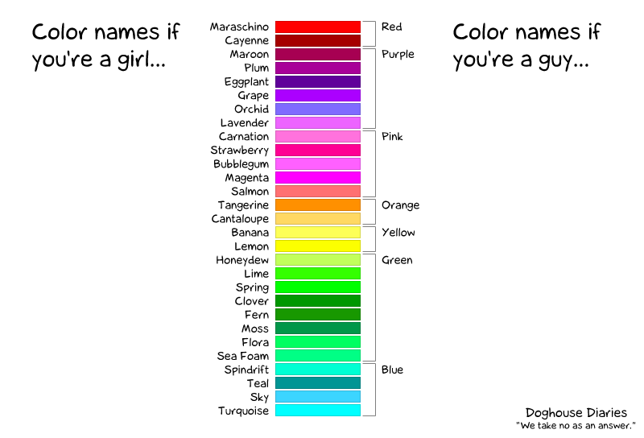

In Scribus esistono diversi modi di creare, importare e gestire i colori e le raccolte di colori. Inoltre Scribus comprende uno strumento avanzato, la mappa cromatica, che aiuta a creare armonie di colore e anche a verificarne gli effetti per persone con disturbi della percezione dei colori.
La risposta a questa domanda è strettamente legata alla risposta a una domanda più fondamentale, e cioè: “Che cos'è un colore?” Il fatto è che non esiste una risposta semplice a questa domanda, poiché il concetto di “colore” può essere definito in centinaia di modi, ad esempio come una combinazione di lunghezze d'onda, come una combinazione di valori di colore nell'ambito di un certo “modello di colore”, come una categoria in una struttura concettuale basata su regole estetiche, ecc. Di conseguenza, nel corso del tempo sono stati sviluppati molti diversi “modelli di colore”, molti dei quali sono divenuti parte di una disciplina detta “scienza del colore”, una scienza che è in effetti una “meta-scienza”, poiché utilizza contributi da molte altre discipline diverse, come la fisica, le neuroscienze, la biologia, la matematica, l'ingegneria, e persino l'arte, l'artigianato o la letteratura. Il “colore” è effettivamente uno dei pochi casi in cui artisti come Johann Wolfgang von Goethe o Albert Henry Munsell hanno dato contributi significativi al progresso scientifico.
Gli utenti di programmi di grafica come Scribus non dovrebbero essere costretti ad imparare tutti i dettagli della scienza del colore, anche se un po' di conoscenze teoriche non possono certo nuocere. Ma, a un livello di base, sapere dell'esistenza dei problemi e degli aspetti a cui abbiamo accennato prima è certamente d'aiuto quando si lavora con i colori, e la vignetta qui sotto può essere un primo passo per capire di quali problemi si tratta:
|  |
Come spesso accade con le vignette ben riuscite, dietro c'è qualcosa di vero e di importante; in questo caso la vignetta mostra che la capacità di differenziare e classificare i colori è molto variabile e i colori possono essere altamente soggettivi. Immaginate due persone, una nella colonna “Girls”, l'altra in quella “Boys”, che parlano al telefono della scelta dei colori per un certo progetto: sarà una discussione quasi impossibile, poiché sia i nomi dei colori (soggettivi) sia la percezione del colore sono molto diverse tra i due interlocutori. Quindi l'uso di raccolte di colori predefinite è un modo di comunicare e scambiarsi informazioni sui colori senza riferirsi a un modello di colore soggettivo né a una conoscenza approfondita della scienza del colore, e l'utilizzo di nomi significativi entro un dato insieme di colori può facilitare ancor di più questa comunicazione.
La creazione di insiemi di colori, inoltre, aiuta i fornitori o i progetti a definire un insieme limitato di colori di cui è consentito l'uso, il che aiuta a mantenere l'uniformità visuale in pubblicazioni diverse.
Da un punto di vista pratico, i colori compresi in una raccolta di colori o quelli creati dall'utente (e quindi aggiunti a una raccolta esistente) sono i soli che possono essere utilizzati per il testo, gli sfondi e le sfumature in un certo documento.
Scribus comprende un'ampia serie di più di 150 utili insiemi di colori, detti anche “raccolte di colori”. Queste raccolte hanno diversi scopi e utilizzi, la maggior parte dei quali sono spiegati in un'apposita pagina. Le raccolte sono più o meno ricche, dalla “Scribus Basic” che contiene solo alcuni colori primari RGB e CMYK, alla “Scribus X11”, che comprende un gran numero di colori (RGB).
Le raccolte di colori in Scribus possono contenere quattro diversi tipi di colore, per ciascuno dei quali è usato un diverso indicatore visuale nelle finestre di dialogo:
| colori RGB: questi colori sono definiti nel modello colore RGB. Ciascun colore è descritto per mezzo dei tre colori primari Rosso, Verde e Blu. | |
|
colori CMYK: questi colori sono definiti nel modello colore CMYK. Ciascun colore è descritto per mezzo dei colori dei quattro inchiostri tipicamente usati nella stampa a colori: ciano, magenta, giallo e nero (in inglese, Cyan, Magenta, Yellow e Key (=Black)). |
| colori spot: sono detti anche colori a tinta piatta, colori speciali, colori dichiarati. Anche se un colore spot può essere definito per mezzo dei modelli colore RGB o CMYK, il suo scopo principale è quello di essere indicato per mezzo di un nome in un file PDF o PostScript. Il nome identifica un determinato colore appartenente a un catalogo o a un campionario realmente esistente, e una tipografia può miscelare o acquistare un inchiostro speciale esattamente corrispondente al colore del campionario. Ciascun colore spot richiede un'apposita lastra per la stampa, e questo spiega perché i colori spot dovrebbero essere usati con cautela, visto che il loro uso rende la stampa più costosa. Un caso tipico di utilizzo di un colore spot è per riprodurre una tinta particolare che caratterizza il logo di un'azienda. Il punto rosso accanto all'icona di un modello di colore indica che un certo colore è un colore spot. | |
|
colore di registrazione: questo è un “colore” speciale utilizzato per i segni di registrazione. È usato dai tipografi per controllare se la stampa a quattro colori è stata eseguita correttamente. È mostrato come colore CYMK, ma consiste di tanti colori quante sono le separazioni, uno per ciascuna lastra. Ciascuna raccolta colori può contenere un solo colore di registrazione, che è indicato da un'icona a forma di bersaglio. |
|
Se lavorate con la gestione del colore attiva, alcuni o tutti i colori di una raccolta possono essere “fuori gamma,” cioè, a seconda del particolare profilo ICC scelto, un certo colore non può essere “tradotto” da un modello colore a un altro, e può verificarsi uno scostamento del colore; in tal caso un segno triangolare di allarme compare accanto al colore interessato. |